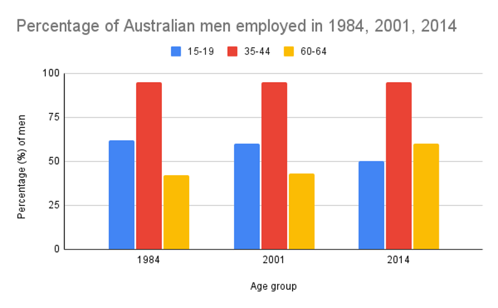

You should spend about 20 minutes on this task.
The charts below show the percentage of Australian men and women in three age groups who were employed in 1984, 2001 and 2014.
Summarise the information by selecting and reporting the main features, and make comparisons where relevant.
Write at least 150 words.
You should spend about 40 minutes on this task.
Should wealthy nations be required to share their wealth among poorer nations by providing such things as food and education? Or is it the responsibility of the governments of poorer nations to look after their citizens themselves?
You should write at least 250 words